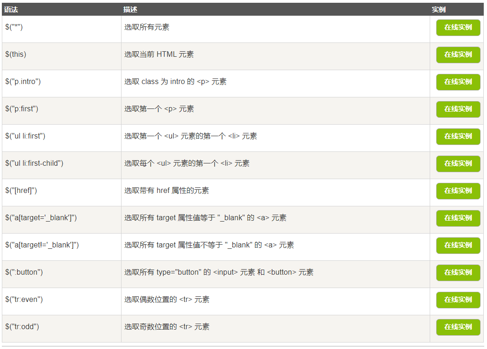

点击标签试一试！！
1.文档就绪事件： jquery函数需要位于document ready函数中，
这是为了防止文档在完全加载（就绪）之前运行 jQuery 代码，
即在 DOM 加载完成后才可以对 DOM 进行操作。
如果在文档没有完全加载之前就运行函数，操作可能失败。
2.选择器使用方法

3.jQuery事件
鼠标事件
click:单击键盘事件
输入：0 表单事件
submit: 请输入你的电话号码
点击输入框以获得焦点
文档/窗口事件
resize: 窗口发生了0 次大小改变。
用于 select 元素时，change 事件会在选择某个选项时发生。当用于 text field 或 text area 时，change 事件会在元素失去焦点时发生。
用于 select 元素时，change 事件会在选择某个选项时发生。当用于 text field 或 text area 时，change 事件会在元素失去焦点时发生。
用于 select 元素时，change 事件会在选择某个选项时发生。当用于 text field 或 text area 时，change 事件会在元素失去焦点时发生。
窗口发生了0 次滚动。